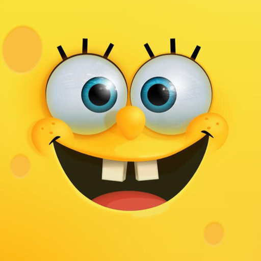
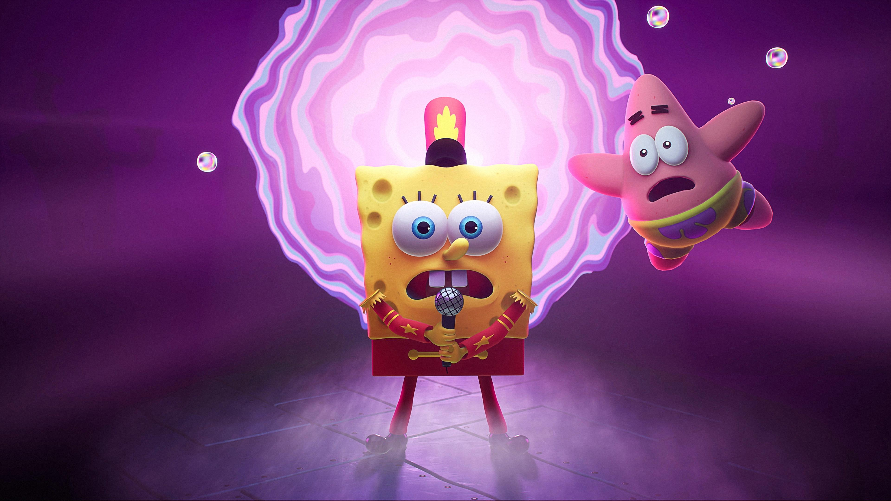

Spongebob Squarepants is a cartoon about a yellow sponge named Spongebob Squarepants who lives underwater in the Pacific Ocean in a two story pineapple house in a town called Bikini Bottom with his neighbor Squidward Tentacles and his best friend Patrick Star.
He works at the Krusty Krab, the most popular restaurant in Bikini Bottoms, as a chef who cooks their most famous burger, The Krabby Patty. With his job in the Krusty Krab, Spongebob meets new characters such as his crazy boss named Eugene Krabs who is in love with money and Plankton, a tiny sea creature who is determined to steal the Krabby Patty formula and make his restaurant more famous! Spongebob goes through crazy adverntures with his best friend Patrick and Mrs.
Puff his boarding school teacher who is always going through some trouble when a Spongebob sits behind the wheel. But with his humorous and optimistic attitude, it doesn't even matter anymore because spongebob makes an amazing and fun character!